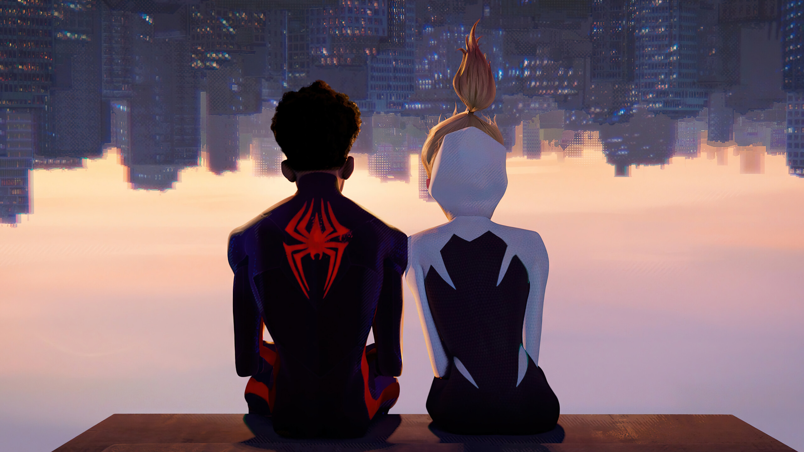

Segunda entrega de la trilogía del universo Spider-Man centrada en Miles Morales. Tras reunirse con Gwen Stacy, el amistoso vecino de Brooklyn Spider-Man es catapultado a través del multiverso. Ahí se encuentra con la Spider Sociedad, un equipo de Spider-Personas encargadas de proteger la propia existencia del multiverso. Pero cuando los héroes chocan entre sí sobre cómo lidiar con una nueva amenaza, Miles se enfrenta a los otros Spiders y deberá redefinir lo que significa ser un héroe para poder salvar a las personas que más quiere. Cualquier persona puede ponerse una máscara, pero es la forma en la que la llevas lo que te convierte en un héroe.

Metro Boomin es el productor ejecutivo de Metro Boomin Presents Spider-Man™: Across the Spider-Verse (Soundtrack From and Inspired by the Motion Picture), la banda sonora de la película Spider-Man: Cruzando el multiverso, que incluye temas de su producción y artistas adicionales. Supone la primera incursión de Metro en las bandas sonoras de películas, aunque su amor por el cine y los súper héroes de cómic le viene de lejos. Sobre la colaboración, Spring Aspers, Presidente de Música de Sony Pictures, ha dicho: "El concepto de la próxima entrega de la historia de Miles exigía un colaborador musical contemporáneo y culturalmente significativo. Metro Boomin era claramente la voz perfecta para diseñar el ambiente musical que apoyara este increíble próximo capítulo".
Dana Sano, vicepresidenta ejecutiva de cine y televisión de Republic Records, comentó: "Metro Boomin es un auténtico visionario que sigue poniendo el listón muy alto. Para la banda sonora de Spider-Man: Across the Spider-Verse, Metro se encargó del diseño y la producción con una pasión y una integridad feroces. En Republic estamos encantados de volver a trabajar con los cineastas y nuestros increíbles socios de Sony Pictures Motion Picture Group".